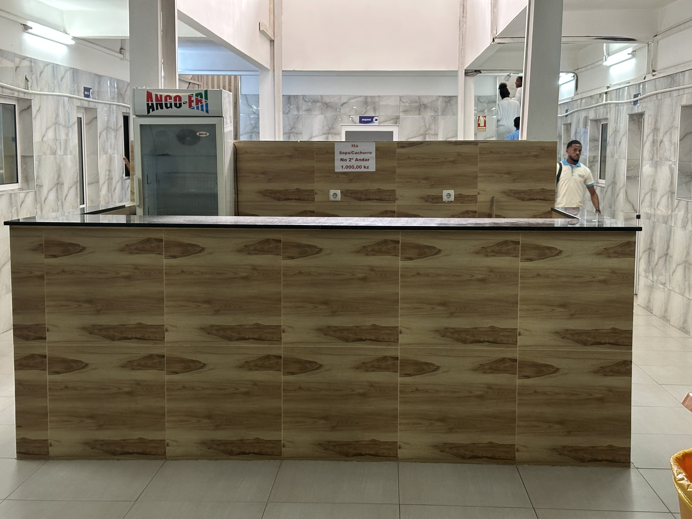

Infraestruturas modernas, equipamentos de última geração e ambientes de aprendizagem concebidos para preparar os nossos estudantes para o mercado de trabalho real.
No Instituto Médio Politécnico Santa Ana e Noesa, acreditamos que a formação técnica de qualidade exige contacto direto com ferramentas, equipamentos e ambientes idênticos aos encontrados no mercado de trabalho.
Os nossos laboratórios foram concebidos com essa premissa: proporcionar ao estudante uma experiência prática supervisionada, segura e alinhada com os padrões profissionais de cada área de formação.


Seis laboratórios especializados, cada um pensado para a área de formação correspondente, com equipamento atualizado e técnicos permanentes.
 Saúde
Saúde
Equipado com microscópios binoculares, centrífugas, analisadores hematológicos e todos os reagentes necessários para a prática das principais técnicas de diagnóstico laboratorial. Os estudantes de Enfermagem e Análises Clínicas realizam aqui as suas aulas práticas semanais, desde a colheita de amostras até à leitura e interpretação de resultados, sob orientação de docentes especializados.
 Saúde
Saúde
Ambiente simulado de uma unidade hospitalar, com camas clínicas, manequins de treino, equipamento de monitorização e material de penso. Permite treinar procedimentos de enfermagem em ambiente controlado antes do estágio hospitalar.
 Informática
Informática
Estações de trabalho com processadores de última geração, ecrãs de alta resolução e acesso à internet de alta velocidade. Ambiente configurado com as principais linguagens de programação, IDEs e ferramentas de desenvolvimento utilizadas no mercado angolano.
 Informática
Informática
Espaço dedicado à configuração de redes informáticas, com switches, routers, servidores e painéis de cablagem estruturada. Os estudantes aprendem a instalar, configurar e gerir infraestruturas de rede em ambiente profissional.
 Gestão
Gestão
Sala de trabalho empresarial simulada, com postos individuais equipados com computadores, software de contabilidade certificado e acesso a bases de dados económicas. Os estudantes praticam lançamentos contabilísticos, elaboração de demonstrações financeiras e gestão de recursos humanos em contexto real de empresa angolana.
 Saúde
Saúde
Espaço dedicado ao estudo das ciências biológicas aplicadas à saúde, com modelos anatómicos, placas de Petri, estufas bacteriológicas e armários de reagentes controlados. Suporta as disciplinas de anatomia, fisiologia e farmacologia dos cursos de saúde.
Conheça em detalhe o que cada laboratório oferece para a formação dos nossos estudantes.

O laboratório de Análises Clínicas replica fielmente o ambiente de um laboratório hospitalar angolano. Os estudantes aprendem a realizar análises hematológicas, bioquímicas e microbiológicas seguindo os protocolos exigidos pelo Ministério da Saúde de Angola.
Cada posto de trabalho dispõe do equipamento e dos reagentes necessários para a realização autónoma dos procedimentos, sempre sob supervisão de um técnico de laboratório certificado.

Os laboratórios de Informática do IMPSAN estão configurados com as ferramentas mais utilizadas no mercado tecnológico angolano. Desde a programação orientada a objetos até à gestão de infraestruturas de rede, os estudantes dominam competências imediatamente aplicáveis.
A ligação por fibra ótica de 1 Gbps garante acesso rápido a plataformas de aprendizagem online, repositórios de código e serviços em nuvem utilizados nas práticas profissionais.

O laboratório de Contabilidade e Gestão vai além das aulas tradicionais. Cada estudante gere uma empresa simulada ao longo do ano lectivo, processando salários, emitindo faturas, submetendo declarações à AGT e elaborando o relatório de gestão anual.
Esta metodologia, única em Angola no ensino médio técnico, garante que os nossos diplomados chegam ao mercado de trabalho com experiência prática documentada em software utilizado pelas empresas angolanas.
Imagens reais dos nossos espaços laboratoriais e do dia a dia dos estudantes em contexto prático.

As vagas são limitadas. Garanta o seu lugar e tenha acesso a todos estes laboratórios a partir do primeiro ano.